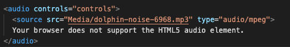

Home
Week 4
Question 25: Fikir wants to make his Webpages HTML5-compliant and eliminate the need for site visitors to dowload plug-ins to listen to music. What can he do to accomplish this?
Incorporate the < audio > element in his Webpages.
Your browser does not support the HTML5 audio element.
